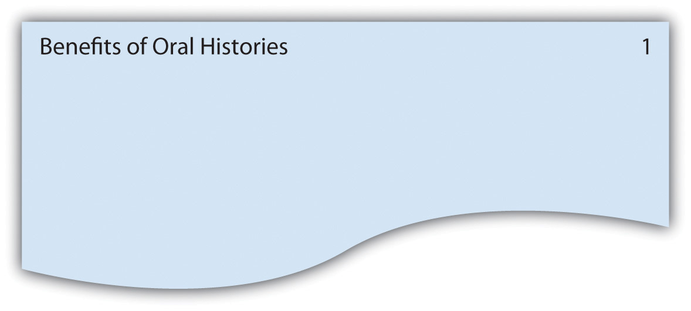
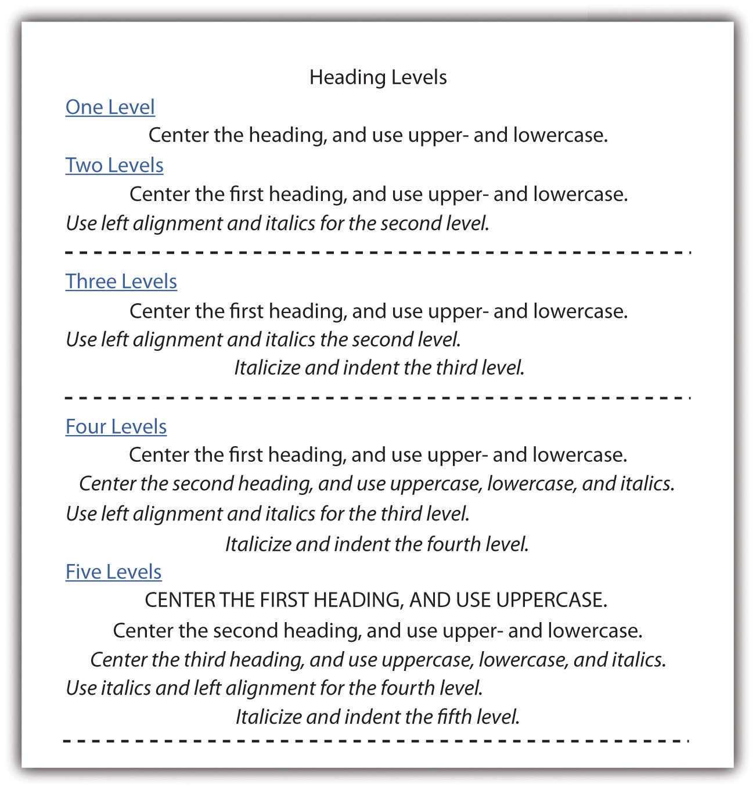
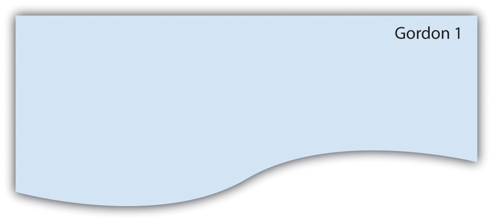
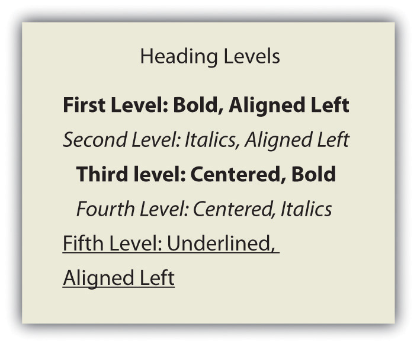

Every time you share a final version of your work, even if it’s only with your instructor and classmates, you are publishing it. The last step in writing an essay is deciding how to publish your work. You might be given specific directions from your instructor; you might take your directions from specific style guides, such as the American Psychological Association (APA) or Modern Language Association (MLA); or you might be free to make your choices about document design. Whichever category your project falls into, the first section in this chapter will give you some helpful ideas. The remaining two sections will present some tips for digital presentations and for presenting orally.
Chapter 9 "Designing" explores general and specific aspects of designing your written work, including margins, line spacing, indentation, alignment, headings, subheadings, fonts, visual text, images, charts, graphs, and text wrapping. In this section, you will learn about the document design requirements of two of the most common style sheets: those from the American Psychological Association (APA) and the Modern Language Association (MLA). (For more on citation and documentation formats from these and other style sheets, see Chapter 22 "Appendix B: A Guide to Research and Documentation".)
APA requires the following set order of pages with each listed page on the list starting on a new page. If your paper does not require one or more of the pages, skip over those pages, but maintain the order of the pages you do use.
A double-spaced title page should include the required information centered on the top half of the page. The title page information can vary based on your instructor’s requests, but standard APA guidelines include either the title, your name, and your college name or the title, your name, the instructor’s name, the course name, and the date.
Figure 10.1
Page numbers should be placed at the top, right margin one-half inch down from the top of the page. Across from the page number, flush left, include the title of the paper in a running head. If the title of the paper is lengthy, use an abbreviated version in the running head.
Make margins one inch on both sides and top and bottom.
Use double spacing with no additional returns. Before you decide where to place your headings, you have to decide how many levels of headings you will have. Typically, you will have two or three levels, but you might have as many as five levels. Keep in mind that the title does not count as a heading level, you should use the levels consistently, and you must have a minimum of two headings at each level. See Figure 10.2 for examples of formatting for different numbers of headings levels.
Figure 10.2
Use 12-point Times New Roman.
Indent the first word of each paragraph from five to seven spaces.
Double-space all text, including titles, subheadings, tables, captions, and citation lists.
Space once after punctuation within a sentence, such as commas, colon, and semicolons, and twice after end punctuation.
MLA requires the following set order of pages with each listed page on the list starting on a new page. If your paper does not require one or more of the pages, skip over those pages, but maintain the order of the pages you do use.
No title page is needed unless your instructor requests it. Instead of a title page, MLA requires that you double-space your name, instructor’s name, course name or number, and the date at the top left. Next, continuing to double space, center the title on the page and start your text under the title.
Figure 10.3
Page numbers should be placed at the top, right margin one-half inch down from the top of the page. Before the page number, use your last name in a running head.
Make margins one inch on both sides and top and bottom.
Use double spacing with no additional returns. Use the heading formats in Figure 10.4 for up to five headings. If you have only two headings, use only the first two formats and so on.
Typically, you will have two or three levels, but you might have as many as five levels. Keep in mind that the title does not count as a heading level, you should use the levels consistently, and you must have a minimum of two headings at each level.
Figure 10.4
Choose a font that is straight forward with no curly flairs or other “fancy” twists, such as Times New Roman or Arial. Use 12-point font.
Indent the first line of each paragraph one-half inch from the left margin by using the tab key (rather than spacing over).
Double-space all text, including titles, subheadings, tables, captions, and citation lists.
Leave only one space after all punctuation (both inside and at the end of sentences).
Read each guideline and identify it as a general guideline, an APA guideline, or an MLA guideline.
As technology advances, the options for digital presentationsDelivery of information that exists only in the virtual world without using paper. continue to grow. Digital presentations refer to methods of presenting your work in the virtual world without using paper. Some of the most common current options are included in this section. All the options can take advantage of links to other parts of the document as well as links to related locations on the Internet. Using such links is one way to take advantage of the capabilities available in digital work. The internal linksA hyperlink within a document that leads to other locations within the document. allow readers to instantly access other sections of your paper. External linksA hyperlink within a document that leads to locations outside of the document. lead to related text, videos, or audio pieces that are located on the Internet. Most of these digital options also allow you to embed video or audio segments so that the reader can simply click on a button or arrow to activate the segments. (For more on what’s at stake when you write for and publish on the web, also see Chapter 13 "Writing on and for the Web".)
PowerPoint is Microsoft Office software that has nearly become a standard presentation software. When you create PowerPoint slides to present your paper, you should use a small number of slides, typically less than ten. The slides should cover the most important aspects of your paper and should be at least somewhat visual in nature. PowerPoint also presents the option of textual and visual animation as well as audio components. In an effort to keep your slides as visual as possible, place bullets next to sentences whenever possible. Also, use fonts that are large enough for a group to read from a screen: 28 points or larger for base text and at least 36 points for headings.
Allow for ample white space on each slide. Without making the pages overwhelming, use color and visuals to add interest to the slides. If you do not have value-adding images, tables, or graphs that you can use, you can add color to the background, to text, or to text boxes.
You can add your voice and other audio to your slides. And you can create a slideshow that you can turn on and run automatically, presenting visuals and sound simultaneously. These capabilities allow you to create your entire presentation and run it without actually saying a word during the presentation. If you intend to run an automatic presentation, make sure you go through practice runs until the entire presentation works as you intend it to work.
Chances are, you will create your paper using Microsoft Word, which has nearly evolved into the standard word processing software in higher education. If you’re not working in Word, save your file as a Word document or in a Word-like format your instructor and peers are likely to be able to open. You will likely be asked to submit your major essays digitally as e-mail attachments or through a digital dropboxA portal for uploading documents within a course management system., file exchangeAnother feature of course management systems allowing students to submit their work., or assignment area within the course management system your instructor or college is using, such as Blackboard. If you are asked to submit your essays digitally, you should assume your instructor and peers will be reading your work on a computer screen and quite possibly online. Therefore, your work can include links and imbedded audio and video components. If, on the other hand, you are asked to submit your essays in hard copy, you can’t make the same assumptions about how it is likely to be read and assessed. There’s nothing wrong with asking for permission to submit your work digitally if you prefer for it to be assessed in that context.
You could present your work on your personal website using web features, such as homepages, navigation buttons, links to other sites, buttons that activate audio and video segments, and overall visual presentations. As a college student, you should only present your work this way when instructed to do so by your instructor. Since not all students have a personal website, this option is still not widely used as a means of presenting college work; however, some instructors are moving in this direction, especially as digital portfolios become an increasingly common expectation. (For more on digital portfolios, see Chapter 13 "Writing on and for the Web", Section 13.4 "Creating an E-portfolio".)
Your instructor might have an online class site where you and your classmates can post your papers, review each other’s work, and edit your work. When the due date arrives, your instructor would then read your final version. In this case, your entire paper would function as a digital presentation. Your instructor can read through your paper, follow your links, and listen or watch video and audio segments you have included. Keep in mind that, unlike a course management system requiring a password and enrollment in the course, both personal websites and class-wide wikis may well be visible to anyone using the web. This fact should cause you some concern about the content you share and the way you choose to present yourself and your identity, but it can also provide a meaningful opportunity to write for external, real audiences.
Using video filming equipment, you could film yourself presenting your work and capture both audio and video. You could then upload your presentation to the Internet (via a common video sharing site like YouTube) or you could burn it to a DVD. If you want your digital films to include a variety of multimedia options, you would have to learn how to incorporate such features using the equipment available to you.
In public speaking, keep in mind that you are trying to achieve the golden middle ground between impromptuA type of public speaking that does not require advance preparation and thus can be unpredictable and less than professional. (off-the-cuff) speaking that can lead to a chaotic and unorganized mess versus completely robotic reading from a large body of text, which will put your audience to sleep. That middle ground is called extemporaneousA kind of public speaking technique that works from a set of notes or PowerPoint slides but does not simply read those notes or slides verbatim. speaking, based on the technique of speaking from notes.
You can present orally in person or online. If you present orally online, you can do so with just sound or with the use of a camera that allows your listeners to see you. Many laptops include built-in cameras and microphones that make it surprisingly easy for you to create a social, visual presence.
Whether you are presenting in person or online, you need to set yourself up to present without having to remember everything you want to say. One way to create prompters that you can use very smoothly is to use PowerPoint slides that you can show as you talk and that can prompt your memory about what you want to say. When you use a PowerPoint in this way, you only see information your audience is looking at so you never have a problem with trying to look at your notes too much. One grave pitfall to this method is the tendency to read from the PowerPoint slides, which can be very boring for your audience, who also presumably can read. A good oral presentation from PowerPoint should be just as extemporaneous as one delivered from note cards.
If using a PowerPoint is not an option, you can present orally using note cards. When using cards, number them to assure they are in the proper order. Since you don’t want to read your cards, don’t write out your entire speech on the cards. Instead use only cues and place one idea per card so that you can turn to the next card as you transition to the next idea. On your note cards, use text that is large enough for you to easily read at a glance. On the back of the card, add additional details in a smaller font in case you must check out information beyond the basic cue.
When you use a PowerPoint, you can have built-in visuals, but when you use cards, you need to consider adding visuals in the form of items, posters, images on a computer screen (local file or one found on the Internet), handouts, and so on. Display visuals or pass out handouts when you want your audience to look at them, otherwise they are likely to be checking out your visuals when you want them to be listening to you.
Keep your audience members in mind when you plan your presentation. Based on their knowledge of your topic, interest in your topic, and attitudes about your topic, decide how basic, how long, and how in-depth your presentation will be.
The amount of preparation you put into the speech in advance will make all the difference. Allow ample time to practice your oral presentation several times. If you are presenting in person or with a computer camera, you might want to record it or practice it in front of a mirror so you can visually see how your presentation comes across and can make desired adjustments. If you have a tendency to talk quickly all the time or when you are nervous, practice talking at a slower pace so your audience will have an easier time following you. Make sure you can consistently talk loudly enough for the whole audience to hear you. If your voice isn’t loud enough, consider using a microphone since an audience that cannot hear quickly becomes unhappy.
While you are practicing, keep track of the amount of time your presentation takes so you can lengthen it or shorten it as needed to meet requirements. If feasible, stand while you present so you will make the strongest possible impression. If you are presenting in person, face your audience and make eye contact with your audience members.
Plan to open your presentation with an attention-grabbing comment, visual, activity, joke, story, or situation. If you capture your audience’s attention at the very beginning, you have a chance of keeping it throughout your presentation. On the other hand, if you lose the audience’s attention at the beginning, it will be very difficult to regain it.
Keep in mind that you do not have to share every detail of your essay in an oral presentation based on it. Choose a few highlights and focus on them in an effort to give a general idea about your work. Speak directly and personally to your audience, using first-person and second-person pronouns like “I,” “you,” and “we.” Use simple sentences that are easy to follow and include visuals of unfamiliar terms. Stay in tune with your audience so you know when they are keenly interested and would appreciate additional elaboration as well as when they are losing interest, which signals that it would be wise to move onto the next topic.
Conclude your presentation by referring back to the interest-grabbing opener or offering another appropriate anecdote or memorable quotation, phrase, comment, or image. When you finish presenting, ask your audience members if they have any questions. If possible, allow as much time as needed to address all questions. Then thank your audience for their attention to your presentation.
If you are nervous about your presentation, keep in mind that nervousness is normal and that it can help bring energy to your presentation. And implement the following ideas to help you remain calm and in control:
When you are presenting online, keep the following tips in mind:
Use the information in this section to complete each of these statements.